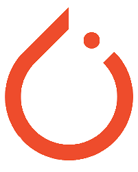
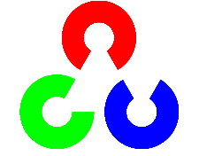

my skills
html
css
javascript
TensorFlow

Pytorch

years of experience
Year Student
marathon participated
awards won
We came 5th as a team in the Digital Turkey Idea Marathon and won a 1500 TL award. I participated in Panasonic Life Solutions Hackathon, Otto GameJam, Atom GameJam, GGJ '21, Best For City Idea Marathon, My Homeland Idea Marathon organized by the Ministry of Youth and Sports. We won the 3rd place in the Future of Finance Idea Marathon organized by YapıKredi, with an award worth 4000 TL. We came 2nd as a team in the Fatih Idea Marathon and won a 7000 TL award. I was founder president of Marmara Information Technologies Society. I fully participated in the School of Politics organized by Müsem in the 2019 - 2020 academic year.
I was a participant of Erasmus+ Education Student Exchange Programme. We achieved the 1st place as a team in the Mobility – Barrier-Free Transportation Idea Marathon organized by the T.R. Ministry of Transport and Infrastructure, and won a monetary award of 9,600 TL.
Member of the Chess Club Board of Directors and Organizator of School's Chess Tournament.